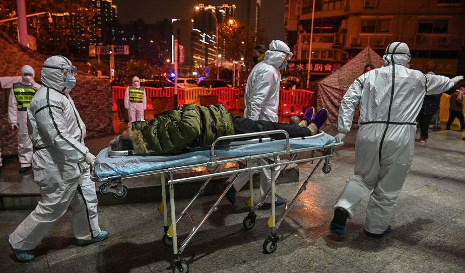

意大利确诊229例死亡7例，韩国检测“新天地”全体信众
原文链接 备份链接 意大利米兰街头。图片来源：半岛电视台 “ 全球新冠肺炎疫情播报，持续更新。 ” （本文持续更新中，点击左下角阅读原文，实时跟踪国际疫情动态。文中段首所示时间为本文更新时间。） 意大利 0800 【意大利新冠肺炎死亡病例 …

财政兜底实现患者“零自付”，保险理赔延展填补账单亏空。如果不幸被新冠病毒击中，能免于因病致贫，对于不幸的微小个体而言，是这个寒冬疫情阴霾下的一抹温暖
文｜《财经》记者 俞燕
编辑｜袁满
住了十天医院之后，经过连续两次病毒核酸检测为阴性、CT复查和专家会诊，武汉周边某市的女孩王晶（化名）终于收到了可以出院的通知。
十几天之前，王晶出现发烧症状。第二天，当体温飙升到38.6摄氏度，王晶心里渐渐生出“中招了”的预感。赶紧让家人把自己送到医院，挂了号，验了血，拍了CT。一天后做了核酸检测和CT复查确诊，成为一名新冠肺炎患者，所幸属于轻症。
亲友们在祝贺王晶康复之余，也有不少人关切地问她：治病花了多少钱？
之前，在一篇刷屏的文章中，一名孕妇因不明原因肺炎，花光了20万元医药费，依然未能挽回生命，让人们印象深刻。20万元医药费，对于普通家庭来说，不是一个可以短时间内轻松掏出来的金额。
“免费治疗！”王晶很干脆地说。
王晶透露，除了第一次去医院时支付了验血和CT费用，确诊后的住院和治疗费用都不用自己花钱。不仅如此，住院期间的三餐也是免费提供，“伙食还不错，荤素搭配”。
王晶是幸运的，成为自国家出台新冠肺炎医疗费用特殊报销政策后“零自付”群体中的一员。
自从1月20日晚国家卫健委高级别专家组组长、中国工程院院士钟南山重新出山，面对全国公众拉响了新冠肺炎“存在人传人现象”的警报，全国便由此进入抗疫状态。近一个月里，各项抗疫政策逐渐清晰和完善。
对于患者来说，最关注的政策莫过于医疗费用的报销政策。与17年前的非典相比，新冠肺炎抗疫的诸多举措更加全面，对于患者的保障，也更加接地气。
“非典时国家也出台了相关的医疗救治扶持政策，但不如这次有这么多更具实操性的技术细节，比如，对于一线医护人员的补偿政策、异地就医患者的医疗费用结算，相关的费用结算报销流程也简化了。”一位地方监管部门人士表示。
随着治愈的患者陆续出院，其医疗费用零自付的政策落地情况也逐渐明晰。近日，多地披露了当地患者零自付政策落实的情况。
据了解，从目前各地对新冠肺炎患者和疑似患者的医疗报销政策来看，基本上由基本医保报销、大病保险、医疗救助和个人自付等构成，而个人自付费用由当地财政兜底解决，医保部门或医院先行垫付，患者则实现了“零自付”。
不过，由于新冠肺炎从症状出现到确诊再到免费救治政策出台，存在一定的“时间差”，此外，由于前期检测试剂盒不足，还有相当一部分有相关症状的患者被排除在确诊或疑似群体之外，因此有相当部分患者无法享受到“零自付”的待遇。
为了缓解患者的医疗费用压力，商业保险机构通过扩展保险责任、取消等待期和免赔额、免费赠送保险等措施，尽可能地让患者获得一定的风险保障。
在支持和鼓励保险机构在抗疫中发挥一方力量之时，监管部门亦同时勒紧了监管之缰，在监管刚性与人性关怀之间进行着平衡。
“保险赔付虽能一定程度缓解出险客户和家庭的经济压力，但无法换回逝去的生命和健康。”在近期发布的一份通知中，银保监会以一种罕见的充满悲悯而又克制的口吻如是提醒，明确提出不得以商业为目的跟风炒作疫情，不得利用疫情事件营销以及利用舆情热点做广告。
“时代中的一粒灰，落在个人那里，可能就是一座山。”武汉当地著名作家方方在“封城系列日记”里写道。
在冰冷的统计数据背后是一个个家庭、一个个人，没有一个人愿意变成名单上的数字。如果不幸被新冠病毒击中，能免于因病致贫，对于不幸的微小个体而言，是这个寒冬疫情阴霾下的一抹温暖。
沉重的医疗费用

2020年1月25日，武汉市红十字会医院的医护人员将一名患者接入医院。图/法新
由于新冠肺炎最初起因不明，首批患者绝大部分都经历过在基层医院或小诊所看病，后又转院复诊。据《财经》记者了解，最多的甚至转院多达四次。在最终确诊前，这些患者的病程从10天到20天不等。
就诊和住院意味着医疗费开销。最初选择在小诊所或小医院看病，除了就近方便，不愿花太多的钱检查，也是这些处在社会底层的患者尤其是年老患者的普遍心态。以CT检查为例，费用约为200元。加之血常规检查、药品费乃至输液，每一次进出医院，对普通患者而言，亦是一笔不小的开销。
疫情曝光初期，由于很多医院没有核酸检测试剂盒，很多出现肺炎症状的患者无法确诊为新冠肺炎。此外，亦有一些患者并不符合疾控中心最初制定的疑似病例的三个诊断标准。对于这部分确诊和疑似名单之外的患者，其医疗费用只能自付。
一家东部省份市级医院的一位临床医生表示，新冠肺炎疫情初期，正值冬季流感高发期，一些患者出现的症状与流感颇为相似，因此在初期一般给药多为左氧氟沙星等抗菌消炎药、奥司他韦等抗病毒药。如果出现呼吸困难和肺炎症状，会用到激素治疗。重症患者可能需要上呼吸机，有时还要输丙种球蛋白以增强免疫力。
每到流感季，被视为“流感神药”的奥司他韦往往出现销量和价格攀升。《财经》记者从药品价格315网看到，10粒的零售价约为150元到190元不等。如作为流感用药，疗程通常需5天。如果需要用到静脉注射丙种球蛋白（IVIG），则2.5g的零售价格约为500元－750元。
如果在ICU使用呼吸机，则首日费用约为1500元，首日以后的每日费用为800元左右。如果还需用到机械循环辅助支持或体外循环膜氧合器（ECMO）即“人工肺”治疗，则首日费用约6万元，此后每日应用的费用约1000元。加上后续的综合治疗，费用则高达约10万－20万元。
“一入医院深似海，从此钱包是路人。”当患者踏入医院大门的那一刻，便意味着一张巨额账单将很快从天而降。
此前有报道称，一些重症患者在治疗期间每天需要打八瓶丙种球蛋白，托人在外面自费购买，花费不菲，还担心“不知能不能报销”。
据澎湃新闻报道，一名年轻孕妇，在发病到过世短短12天时间内，花费了20多万元。除了参保的“新农合”保险报销了6万多元、社会筹款4万多元，其他费用由其家人四处借钱筹得。最终，因为实在无处筹钱，而且妻子病情日益加重，丈夫只好签字放弃了治疗。
这名孕妇去世的当天，武汉市卫健委宣布，新冠肺炎确诊患者全部免费救治，发热门诊留观患者则享受零缴费。国家医保局出台了针对新冠肺炎确诊患者的特殊报销政策。不过对于这位孕妇患者来说，即使赶上了政策出台，也未必能享受到这项政策的红利，因为她的死因是重症肺炎导致的感染性休克和呼吸循环衰竭，至死未被确诊为新冠肺炎。
上述临床医生对《财经》记者表示，如果未经核酸试剂确诊，按照循证医学的要求，医院通常按普通肺炎进行收治。“如果没有入院确诊，这部分作为普通肺炎治疗的患者，在目前的统计口径里可能连疑似都算不上”。
看到王晶零自付治疗后亦有出院的消息，一位有新冠肺炎相似症状的患者不由发出羡慕之声，由于其核酸检测两次都是阴性，最终被确诊为普通肺炎，除了社保报销的部分，所余检查、治疗和住院医疗费用只能自己买单。
据了解，针对新冠肺炎患者的特殊报销政策出台后，定点收治医院陆续向已入院的患者退还了预交的住院费。
从目前各地披露的新冠肺炎患者的医疗费用来看，非危重患者的医疗费用在一二万元到三四万元不等。在国家兜底医疗费用的政策出台之前，在基本医保报销后，自费比例约有三到五成。
医疗费减负
钟南山院士敲响疫情“人传人”的当日，国家卫健委宣布将新冠病毒纳入《传染病防治法》规定的乙类传染病，并采取甲类传染病的预防、控制措施，由该病毒导致的肺炎纳入《国境卫生检疫法》规定的检疫传染病管理。
第二天（1月21日），国家医保局发布公告称，对确诊为新冠肺炎患者采取特殊报销政策，将国家卫生健康委《新冠肺炎诊疗方案》覆盖的药品和医疗服务项目，全部临时纳入医保基金支付范围。换言之，已确诊的新冠肺炎患者的相关医疗费由政府兜底，实施先救治后结算。
随后，财政部与国家医保局联合发文，明确对新冠肺炎患者的医疗费用，在救助保障之外的个人负担部分由财政给予补助。异地就医患者的社会医保报销，不执行异地转外就医支付比例的调减规定。
此外，医保基金的支付范围也进行扩容，符合卫生健康部门规定的肺炎诊疗方案，但使用药品和医疗服务项目此前并未纳入医保基金支付范围的，临时亦可纳入并执行支付。
在新政之下，对于确诊的患者，除医保报销外，医疗费全由政府兜底。在各发热门诊留观的病人，门诊费亦由政府买单。这意味着，从门诊到住院费用，全面实现了患者零自付。
1月27日，国家医保局、财政部和国家卫健委进一步把疑似病例列入免费范围。不过疑似患者个人负担部分中央与地方财政的分摊比例，并未明确。
据了解，在国际上将法定传染病的治疗费用由公费承担，是一种通行做法。2013年，日本将H7N9型禽流感确定为“指定传染病”，其治疗费用由公费承担。本次新冠肺炎疫情发生后，日本、泰国、新加坡亦对境内的染疫患者实施公费治疗，且不分国籍。
一位医界人士指出，根据我国的《传染病防治法》，中央财政对困难地区实施重大传染病防治项目给予补助，对患有特定传染病的困难人群实行医疗救助，可减免医疗费用。以往结核病之类的传染病的常规药费可予免费，但需在结核病防治所收治，而新药和辅助治疗的药费仍需自费。从本次疫情的诸项医疗费用减负措施来看，比《传染病防治法》的救助规定范围更大，更加具有普惠性，给予患者的救助非常给力。
近期，随着各地治愈出院的患者逐渐增多，对其医疗费用的报销情况陆续披露。从各地通报的情况来看，医疗费用约为一万元左右，其中自付费用约为三成。如有基本医保、大病保险和医疗救助报销，则自付费用占比不到两成。自付部分便由财政全部兜底。
“第一次体验到看病不花钱。虽然生病不开心，但不用花钱，确实挺能减轻个人的经济压力。尤其是现在都还没复工，公司还不知能不能撑到发工资的时候。”王晶表示。
一位地方监管部门人士表示，从针对本次疫情下发的救助政策来看，比非典时期具有更多的技术细节，保证了执行过程的可操作性，同时口子也开得很大。再比如，救治新冠肺炎患者新增的医疗服务项目，不需经过新增项目立项程序，可由定点救治医疗机构直接确定使用，且可按照成本测算定价原则自行定价。比如，允许市内调剂使用的中药自制剂，纳入医保支付范围。
在异地就医方面，医保部门亦取消异地就医、转诊转院备案手续，个人住院费用由医保部门或医院先行垫付。为了减轻医疗机构垫付的压力，一些省市对定点收治医院预拨部分资金，并实时根据其申报需求预拨资金。
据了解，在经办服务方式上，各级社会医疗保障机构亦进行相应的调整，实行在线办理、绿色通道、长处方报销等多项服务创新。
除了国家卫健委和国家医保局联手火线救助患者，民政部亦于1月29日发文对低保、贫困的新冠肺炎患者，给予临时救助。此外，对于因探亲、旅游、务工等原因在非户籍地染疫并导致生活困难的流动人口患者，亦直接实施临时救助。
“行动迅速，力度空前。”一位在县级政府部门工作的人士感叹。据介绍，当地一名确诊患者在外地出差过程中染疫，便在出差所在地的医院就地治疗，经过十天的治疗顺利出院，无需体验昔日异地就医时复杂的报销程序。
商保不缺位
疫情发生后，商业保险公司纷纷启动应急响应机制，迅速汇入抗疫大军。
据了解，在新冠肺炎疫情发生之前，传染病并不涵盖在重疾险和医疗险的保险责任范围之中。这意味着，即使购买了高达百万的医疗险，也未必能获得相应的赔付。
一位寿险公司人士指出，医疗险有一定期限的等待期，并有免赔额的限制。即使医疗险将传染病纳入赔付范围，但还要符合等待期和免赔额的要求。
更为重要的是，赔付的前提是该疾病获得确诊。在疫情初期，由于检测试剂盒不足，以及一些患者的病征并不符合三项确诊标准，有相当一部分人并不在确诊之列。
那么对于颇受消费者欢迎的重疾险，是否也可以为新冠肺炎买单呢？
据了解，目前“急性呼吸窘迫综合征”是保险公司重疾险条款中常见的约定疾病，但新冠肺炎诊疗方案中所提及的其他疾病，在目前的重疾险产品中还较少涵盖。不过，一位寿险公司人士指出，因新冠肺炎引起的并发症如果涵盖重疾险的保障范围，则可得到赔付。
此外，染疫患者去世，如其生前投保了定期寿险，则可以对其赔付身故保险。
为了更好地发挥保险业在抗疫中的作用，2月3日，银保监会人身险部发文，支持人身保险公司在风险可控的前提下，在疾病险、医疗险等产品中针对新冠肺炎客户取消等待期、免赔额、定点医院等限制，并支持将意外险、疾病险等产品的保险责任范围扩展至新冠肺炎等。
在新规之下，多家保险公司针对目前在售的医疗险、意外伤害险和重疾险等保险产品，取消了等待期、免赔额和定点医院等限制，扩充了针对新冠肺炎的相关责任赔付。确诊后的新冠肺炎如达到重症或危重症标准，亦可视为一次重大疾病，且不受等待期限制。部分保险公司甚至在原保险责任不变的基础上额外给付基本保险金额的30％左右。
复旦大学风险管理与保险学系主任许闲在《复旦金融评论》撰文指出，在现有的社会医疗保障框架之下，用国家兜底的形式解决了新冠肺炎患者的医治费用。但商业保险亦可作为补充，为已确诊人群、疑似人群早期的医治费用提供补偿，也可为非患者的疫情恐慌和常规治疗费用提供相应的补偿。
《财经》记者从多家保险公司获悉，在其理赔案件中，便有一部分来自新冠肺炎患者确诊前或界定为疑似患者前所发生的医疗费用。“确诊之前的相关费用一般由个人负担，如果之前购买了医疗保险，是可以赔付这一部分费用。”一位保险公司人士表示。
在本次疫情中，亦有多家保险公司提供了每日300元－500元不等的住院补偿金。“这一部分住院补偿金相当于误工期间的收入，可以补偿一定程度的经济损失，对患者也是一种安慰。”一位人身险公司人士表示。

▲点击图片查看更多疫情报道
责编 | 黄端 duanhuang@caijing.com.cn
本文为《财经》杂志原创文章，未经授权不得转载或建立镜像。如需转载，请在文末留言申请并获取授权。
原文链接 备份链接 意大利米兰街头。图片来源：半岛电视台 “ 全球新冠肺炎疫情播报，持续更新。 ” （本文持续更新中，点击左下角阅读原文，实时跟踪国际疫情动态。文中段首所示时间为本文更新时间。） 意大利 0800 【意大利新冠肺炎死亡病例 …
原文链接 备份链接 记者：翟兴波 本文来源：湖北日报 “ 在连续16天无新增确诊病例后，2月21日，神农架林区新增一例新冠肺炎确诊病例。 ” 在连续16天无新增确诊病例后，2月21日，神农架林区新增一例新冠肺炎确诊病例。 据神农架林区新冠 …
原文链接 备份链接 2 月 17 日，《中华流行病学杂志》杂志上，中国疾病预防控制中心新型冠状病毒肺炎应急响应机制流行病学组最新发表新冠肺炎研究。 在对截至 2020 年 2 月 11 日中国内地报告的 超过 7 万病例的流行病学特征进行 …
原文链接 备份链接 图片来源：pexels 记者：肖恩 “ 韩国新增的3例病例感染路径不明。韩国卫生部门认为，从国内外疫情来看，新冠肺炎疫情已经进入新局面。 ” 就在日本正为国内新型冠状病毒肺炎疫情的严峻形势忧心的同时，邻国韩国也在为抗疫 …
原文链接 备份链接 【财新网】（记者 丁捷）湖北新冠肺炎确诊病人一夜暴增。据湖北卫健委2月13日通报，2月12日全省新增新冠肺炎病例14840例，这和湖北省首次将“临床诊断病例”纳入确诊有关。“第五版诊疗方案”2月4日下发后，患者数量未 …